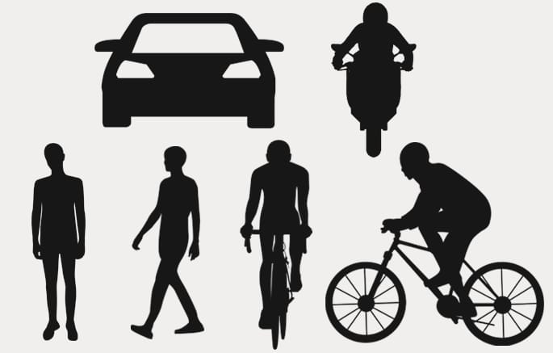
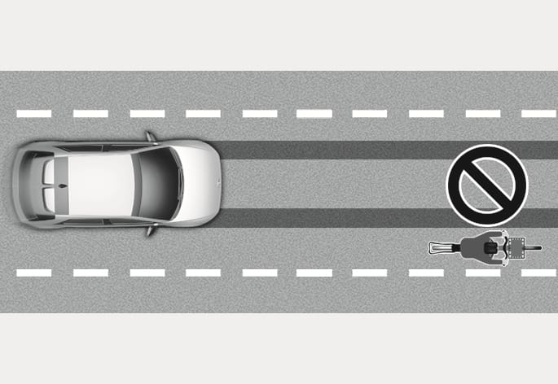
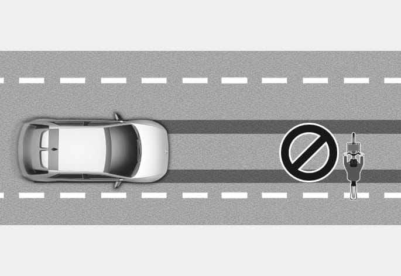
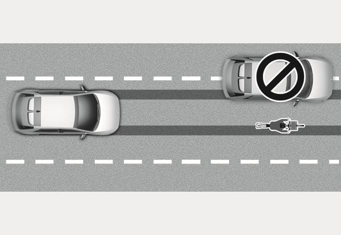
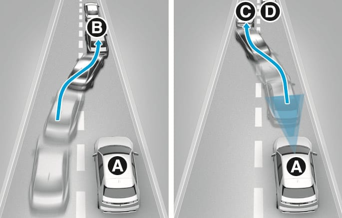

전방 충돌방지 보조 이상 및 제한 사항
전방 충돌방지 보조에 이상이 있거나 센서의 가림이 발생하면 클러스터 등에 경고문이 표시되고 통합 (
-
경고 내용은 클러스터 표시창 중 유틸리티 정보 뷰의 서비스 메시지에서 확인할 수 있습니다.
-
센서 앞에 이물질이 있는 경우, 제거하면 전방 충돌방지 보조가 다시 정상적으로 작동합니다. 이물질을 제거해도 통합 경고등과
O /P 경고등이 계속 켜져 있으면 당사 직영 하이테크센터나 블루핸즈에서 점검을 받으십시오.
-
인식 센서 가림 경고문이 표시되지 않거나 경고등이 켜지지 않더라도 전방 충돌방지 보조가 정상적으로 작동하지 않을 수 있습니다.
-
시동을 건 직후에 인식 센서가 오염되었거나 차량 주변에 물체가 존재하지 않는 경우(앞이 막힘 없이 트인 장소 등) 전방 충돌방지 보조가 정상적으로 작동하지 않을 수 있습니다.
-
가림 및 고장 상태에서 시동을 껐다 다시 걸면 가림 및 고장 상태가 유지 되어서 전방 충돌방지 보조가 정상적으로 작동하지 않을 수 있습니다.
전방 충돌방지 보조는 다음의 센서를 사용합니다.
-
전방 카메라
-
전방 레이더
-
전측방 레이더 (사양 적용 시)
-
후측방 레이더 (사양 적용 시)
인식 센서에 관한 자세한 내용은 '인식 센서 및 제한 사항'을 참고하십시오.
인식 센서가 주변 상황을 인식하기 어려운 상황에서는 전방 충돌방지 보조가 정상적으로 작동하지 않을 수 있습니다.
다음과 같은 경우에는 전방 충돌방지 보조가 정상적으로 작동하지 않거나 예기치 않은 작동이 발생할 수 있습니다. 주의하여 운전하십시오.
-
인식 대상(차량, 이륜차, 보행자 및 자전거 탑승자)의 일부 형상만 영상에 포함되는 경우
-
전방 차량이 버스, 대형 트럭, 특이한 형태의 짐을 실은 트럭, 트레일러 차량 등 형상이 특이하거나 특수 차량인 경우
-
전방 차량 및 이륜차에 후미등이 없거나 후미등의 형상 또는 장착 위치가 특이한 경우
-
주변이 어두울 때 전방 차량 및 이륜차의 후미등이 꺼져 있거나 밝기가 약한 경우
-
전방 차량의 후면부가 작거나 정상적으로 보이지 않는 경우(전방 차량이 비스듬하게 주행하는 경우, 차량 옆면이 보이는 경우, 전복되어 있는 경우 등)
-
전방 차량의 지상고가 낮거나 높은 경우
-
인식 대상(차량, 이륜차, 보행자 및 자전거 탑승자)이 갑자기 끼어드는 경우
-
가드레일, 근접 차량 등 전방 레이더에 반사가 잘되는 물체가 주변에 있는 경우
-
전방 자전거가 전방 레이더에 반사가 잘 되지 않는 재질인 경우
-
전방 차량 및 이륜차를 늦게 인식하는 경우
-
전방 차량 및 이륜차가 갑자기 장애물에 가려져서 인식하지 못하는 경우
-
전방 차량 및 이륜차가 뒤늦게 차로를 변경하거나 급하게 속도를 줄이는 경우
-
전방 차량 및 이륜차의 각도가 많이 틀어진 경우
-
전방 차량에 눈이 많이 쌓인 경우
-
자차가 차로를 이탈하거나 복귀하는 경우
-
자차의 주행이 불안정한 경우
-
자차 선회 중에 전방 차량 또는 이륜차를 인식하지 못한 경우
-
자차가 지속해서 선회하는 경우
-
전방 차량이 특이한 형상인 경우
-
전방 차량이 언덕 또는 내리막 길에 있는 경우
-
전방의 보행자 및 자전거 탑승자의 신체가 가려지거나 직립하지 않은 경우(눕거나 허리를 굽힌 경우 등)
-
전방의 보행자 및 자전거 탑승자의 신체 형태를 구분하기 어려운 옷 또는 장비를 착용한 경우

2C_FrontViewImage
위 그림은 인식 센서가 차량, 이륜차, 보행자 및 자전거 탑승자로 인지 가능한 이미지 예시입니다.
-
전방의 보행자 및 자전거 탑승자가 빠른 속도로 이동하는 경우
-
전방의 보행자 및 자전거 탑승자의 키가 작은 경우
-
전방의 보행자 및 자전거 탑승자가 불안정하게 움직이거나 주행 방향에 교차하여 복잡하게 움직이는 경우
-
다수의 보행자 및 자전거 탑승자가 모여있는 경우
-
전방의 보행자 및 자전거 탑승자가 주변 환경과 구분하기 어려운 경우(주변 환경과 유사한 색상의 옷 또는 유사한 형상 등)
-
교차로 주변에서 보행자, 자전거 탑승자, 교통 표지판, 구조물 등을 지나는 경우
-
다음과 같은 장소에서 주행하는 경우
-
증기, 연기 또는 그림자가 있는 곳
-
터널 및 철교 주변
-
주변 차량이나 구조물이 적은 지역(사막, 초원, 교외 등)
-
주차장
-
톨게이트, 공사 구간, 비포장 도로, 부분 포장 도로, 요철로, 과속 방지 턱 등
-
도로상에 철로, 기타 금속제 물체가 있는 곳
-
경사 도로, 곡선 도로 등
-
가로수 또는 가로등이 있는 곳
-
나무나 풀이 무성한 좁은 도로
-
강한 전파 및 전기적 잡음에 의한 간섭이 발생하는 곳
-
-
차량이 불안정하게 움직이거나 심하게 흔들리는 경우
-
타이어 공기압 이상, 화물칸의 과다 적재 등으로 차고가 심하게 변한 경우
-
스노우 체인이나 스페어타이어 또는 규격이 다른 휠을 장착한 경우
전측방 또는 후측방 레이더 센서가 주변 상황을 인식하기 어려운 상황에서는 추월시대향차 대응 기능, 측방 접근차 대응 기능, 회피 조향 보조 기능이 정상적으로 작동하지 않을 수 있습니다. 센서의 위치 및 주의 사항은 '인식 센서 및 제한 사항'를 참고하십시오.
다음과 같은 경우에는 각 기능이 정상적으로 작동하지 않거나 예기치 않은 작동이 발생할 수 있습니다. 주의하여 운전하십시오.
-
고속도로 진출입 램프구간을 주행하는 경우
-
가드레일, 벽 등이 이중으로 되어있는 도로를 주행하는 경우
-
후방 차량이 매우 근접하여 주행하거나 근접 상태에서 추월하는 경우
-
상대 차량을 추월하는 경우
-
옆 차량과 동시에 출발하여 가속하는 경우
-
상대 차량이 옆차로에서 옆옆 차로로 이동하거나 옆옆 차로에서 옆차로로 이동하는 경우
-
다음과 같은 대상 물체를 인식하는 경우
-
소형 이륜 원동기 또는 자전거
-
짐이 없는 트레일러 등 평평한 형태의 차량
-
버스, 대형 트럭 등 대형 차량
-
사람, 동물, 쇼핑 카트, 유모차 등 작은 크기의 이동 물체
-
스포츠카 등 차체가 낮은 차량
-
-
다음과 같이 차선 또는 차로를 인식할 수 없는 경우
-
차선 없이 연석만 있는 경우
-
버스 전용 차로 혹은 버스 전용 차로의 좌/우측 차로로 주행하는 경우
-
공사 구간 등 차선이 복잡하거나 일부 구조물 등이 차선을 대체하고 있는 경우
-
비, 눈, 먼지, 모래, 기름 및 물웅덩이 등 이물질로 차로가 잘 보이지 않는 경우
-
차로 폭이 매우 좁거나 넓은 경우
-
지그재그 차선, 횡단보도 마크 및 노면 이정표 등의 노면 표시가 있는 경우
-
공사 구간, 전용 차로 등 2개 이상의 차선 표시가 있는 경우
-
차로 수가 변하거나 차로가 합류하는 구간을 지나는 경우
-
젖은 노면 등으로 인해 차로와 도로의 색상 구분이 충분치 못한 경우
-
차로 또는 근처에 차선 외의 흔적이 있거나 차선과 유사한 표시가 있는 경우
-
중앙 분리대, 가드레일, 소음벽, 주변 잡목 등 도로 주변 물체의 그림자가 차로를 덮는 경우
-
교차로 등에서 차로가 갑자기 사라지거나 보이지 않는 경우
-
전방 차량과의 거리가 너무 짧거나 전방 차량이 차선을 가리는 경우
-
회피 조향 보조 기능의 작동 제한사항
다음과 같은 상황에서는 회피 조향 보조 기능이 정상적으로 작동하지 않을 수 있습니다.
-
보행자나 자전거가 인식 영역 밖에 위치한 경우

2C_EvasiveSteeringAssist_1
-
보행자나 자전거가 횡 방향으로 이동하는 경우

2C_EvasiveSteeringAssist_2
-
보행자나 자전거가 인식 영역 내에 있지만, 회피 조향을 위한 충분한 공간이 없는 경우

2C_EvasiveSteeringAssist_3
-
커브 길에서 주행하는 경우

2C_SCCDrivingOnCurve
커브 길에서는 전방에 있는 차량, 이륜차, 보행자 및 자전거 탑승자를 인식하지 못해 전방 충돌방지 보조의 성능이 저하되어 경고, 제동 또는 조향(사양 적용 시)을 도와주지 않을 수 있습니다.
커브 길에서는 다른 차로 또는 차로 밖에 있는 차량, 이륜차, 보행자 및 자전거 탑승자를 인식하여 전방 충돌방지 보조 작동으로 불필요하게 경고, 제동 또는 조향(사양 적용 시)을 할 수 있습니다.
커브 길에서는 전방 도로 상황 및 주행 상태를 확인하고 주의하여 운전하십시오. 필요하면 브레이크 페달을 밟아 직접 속도를 조절하거나 스티어링 휠을 조작하십시오.
-
경사가 있는 길에서 주행하는 경우

2C_FCADrivingOnIncline
오르막길이나 내리막길에서는 전방에 있는 차량, 이륜차, 보행자 및 자전거 탑승자를 인식하지 못하여 경고, 제동 또는 조향(사양 적용 시)을 도와주지 않을 수 있습니다.
또한 선행 차량, 이륜차, 보행자 및 자전거 탑승자를 갑자기 인식하여 속도가 빠르게 감속할 수 있습니다.
오르막길이나 내리막길에서는 전방 도로 상황 및 주행 상태를 확인하고 주의하여 운전하십시오. 필요하면 브레이크 페달을 밟아 직접 속도를 조절하거나 스티어링 휠을 조작하십시오.
-
차로 변경 시

2C_FCAChangingLane
옆 차로의 차량(B)이 자차(A)의 주행 차로로 차로를 변경할 때 센서의 감지 범위 안으로 들어올 때까지 차량(B)을 인식하지 못할 수 있습니다. 갑자기 끼어드는 차량은 센서가 늦게 인식할 수 있습니다.
바로 앞에 있는 차량(C)이 옆 차로로 빠져 나갔을 때 자차의 주행 차로에 있는 앞 차량(D)을 인지하지 못하여 충돌 위험이 발생할 수 있습니다.
항상 전방 도로 상황 및 주행 상태를 확인하고 주의하여 운전하십시오. 필요하면 브레이크 페달을 밟아 직접 속도를 조절하거나 스티어링 휠을 조작하십시오.
-
차량 인식

2C_CameraRadarDetectingVehicle
전방 차량의 차고가 높거나 적재물이 후면으로 돌출되어 있다면 위험 상황이 발생할 수 있습니다.
항상 전방 도로 상황 및 주행 상태를 확인하고 주의하여 운전하십시오. 필요하면 브레이크 페달을 밟아 직접 속도를 조절하거나 스티어링 휠을 조작하십시오.
-
다른 차량이나 트레일러를 견인할 때는 전방 충돌방지 보조를 사용하지 마십시오. 제어 안전성이 떨어질 수 있습니다.
-
차량, 이륜차, 보행자 및 자전거 탑승자와 형상 또는 특성이 유사한 물체를 인식하는 경우 전방 충돌방지 보조가 작동할 수 있습니다.
-
보행자 및 자전거 탑승자가 끌거나 미는 카트, 자전거, 여행가방, 유모차 등은 인식하지 않습니다.
-
강한 전자파에 의해 전방 충돌방지 보조가 순간적으로 해제될 수 있습니다.
-
시동 또는 전방 카메라 초기화(재부팅 등) 시 약 15초 동안 기능이 작동하지 않을 수 있습니다.